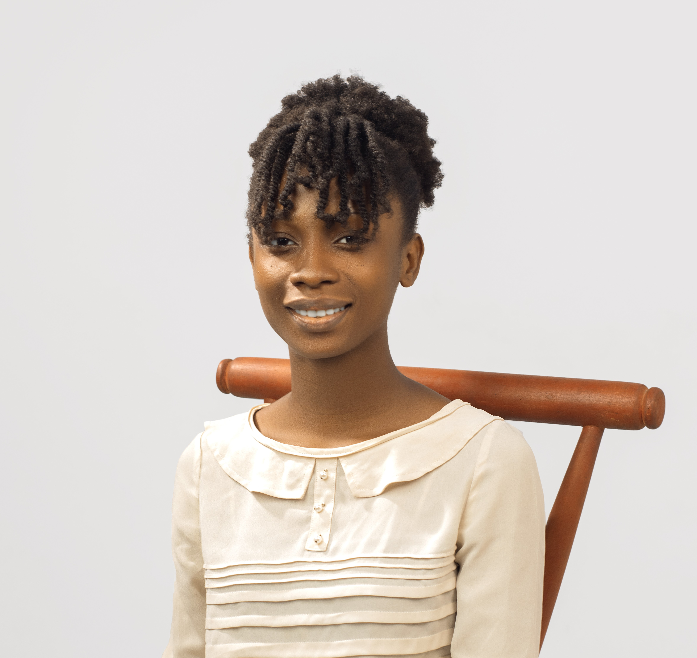

ALESIRA NEEDOM
Welcome — I'm a 100 level, B. Sc Cybersecurity student at Miva Open University, building this site as a living record of my coursework, projects, and academic goals. I am so much passionate about protecting the globe from evolving cyber threats ranging from individuals to organisations to Government properties. My aim is to become a highly skilled cybersecurity professional who strives to continuously learn emerging technologies. Mastering my ethical hacking techniques, and contribute to the development of secure digital system.

I AM ALESIRA NEEDOM
I first got curious about technology in secondary school, tinkering with old computers and wondering how networking actually worked behind the scenes and how data were protected from cyber criminals. That curiosity eventually led me to pursue a degree in Cybersecurity, where I've been able to turn that curiosity into real skills — from writing my first lines of code to building full websites like this one. After graduation, I hope to work as a Cybersecurity Analyst, effectively using my tools for protecting and defending individual, Organisational and Governmental properties (Data), while continuing to sharpen my skills in cybersecurity.
Outside of coursework, I'm interested in reading, graphic design and music production. Read more about my background on the About page.